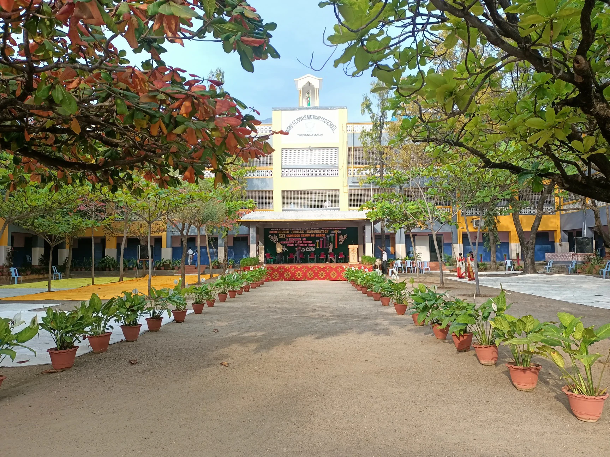

About Me
Computer Science Engineering student with a strong foundation in Java, Python, and full-stack development, experienced in building web applications, dashboards, and automation tools. Skilled in problem-solving, data handling, and system design, with hands-on experience through academic projects and internships. Certified in Java, Python, and Data Visualization, and passionate about creating efficient, user-friendly software solutions while continuously learning and improving.
Internship Experience

Web Development Intern
CodeBind Technologies | July 2024
- Developed and maintained web applications using HTML, CSS, JavaScript, PHP, and MySQL.
- Designed responsive UIs and implemented robust backend logic for database connectivity.
- Collaborated with a team to deliver user-friendly, efficient web solutions.
- Gained hands-on full-stack development and teamwork experience.
Skills
Education

B.E. Computer Science and Engineering
Hindusthan College of Engineering and Technology, Coimbatore
CGPA: 8.6/10 (Expected May 2026)

HSC (2022)
Mount St. Joseph Matric. Hr. Sec. School, Tiruvannamalai
Percentage: 85%
SSLC (2020)
Mount St. Joseph Matric. Hr. Sec. School, Tiruvannamalai
Percentage: 92%
Projects

Heart Disease Dashboard
Interactive dashboard for heart disease trends and risk prediction using machine learning. (Python, Streamlit)

Hospital Requirement Analyzer
Mini-project using HTML, CSS, and Flask to streamline hospital equipment requests and complaint tracking.

AURA Language Learning App
Java-based terminal app introducing vocabulary in Japanese, French, and Spanish with translation features.

Online Tourism Website
Developed a dynamic tourism website as an intern project, featuring interactive maps, user authentication, and data-driven recommendations.
Certificates & Achievements
- Power BI Data Analyst, Microsoft
- Digital Marketing, CodeBind Technologies
- Java Fundamentals, IBM
- Python Programming, IBM
- Data Visualization, IBM
- Matlab Course, HICET
Contact
Email: sentamilselvanpalani@gmail.com
Phone: +91 6385402164
Location: Coimbatore, Tamil Nadu